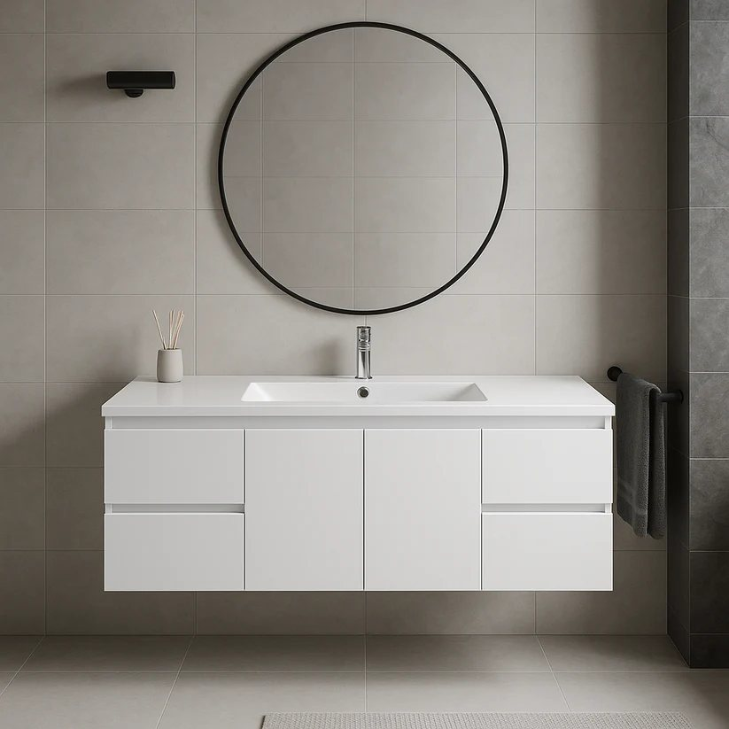
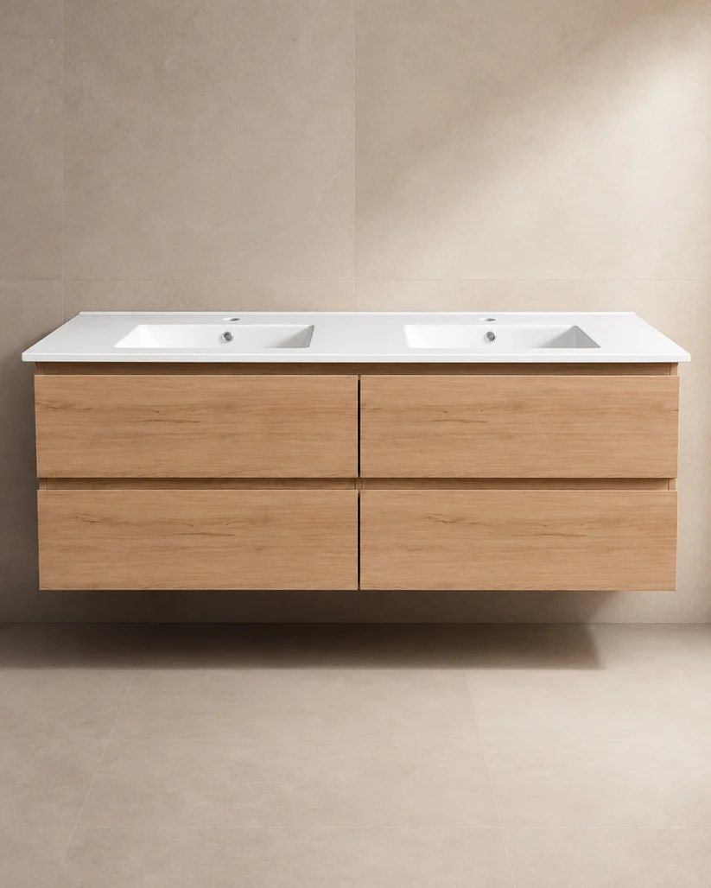

24" Floating Vanity — White
24" x 18" · Two drawers
Elegant floating vanity designed for modern bathrooms. Sleek white PVC construction offers a contemporary aesthetic that maximizes floor space. Two spacious drawers provide ample storage for toiletries and bathroom essentials while maintaining a clean, minimalist appearance. The durable PVC resists moisture and humidity, and the wall-mounted installation makes cleaning underneath effortless. Perfect for small to medium-sized bathrooms.
$290 USD
30" Floating Vanity — White
30" x 18" · Two drawers
Sleek and modern floating vanity designed to elevate your bathroom aesthetic. Durable white PVC construction resists moisture and humidity. Two spacious drawers provide convenient storage while keeping countertops clutter-free. The floating design creates an airy feel, making smaller bathrooms appear larger while offering easy floor cleaning underneath. Mounts securely to wall studs for stability and longevity.
$345 USD
36" Floating Vanity — White
36" x 18" · Two drawers
Sleek and modern floating vanity designed to maximize your bathroom space. White PVC construction resists moisture, and two spacious drawers store bathroom essentials while maintaining a clutter-free countertop. The floating design promotes easy floor cleaning and creates an open aesthetic suitable for contemporary bathrooms.
$415 USD
48" Floating Vanity — White
48" x 18" · Four drawers
Sleek floating vanity built to make a statement in larger bathrooms. Durable white PVC construction resists moisture and daily wear. Four spacious drawers keep towels and toiletries organized while maintaining a clean, clutter-free countertop. The wall-mounted design creates an open, airy feel and makes floor cleaning effortless — perfect for primary baths and busy family bathrooms.
$550 USD
Most popular

60" Floating Vanity — White, Single Sink
60" x 18" · Four drawers · Single sink
Elegant floating vanity designed for modern bathrooms. Sleek 60" wide by 18" deep white PVC construction resists moisture and humidity. Four spacious drawers provide generous storage while the single-sink layout keeps the look streamlined. The floating design creates an open, airy feel while maximizing floor space — perfect for a primary bath that wants scale without a double-sink footprint.
$725 USD
Out of stock

60" Floating Vanity — White, Double Sink
60" x 18" · Four drawers · Double sink
Elegant floating vanity designed for modern bathrooms. Sleek 60" wide by 18" deep white PVC construction resists moisture and humidity. Includes four spacious drawers for organized storage and a double sink basin for shared use. The floating design creates an open, airy feel while maximizing floor space — perfect for master baths or shared bathrooms.
$745 USD
24" Floating Vanity — White Oak
24" x 18" · Two drawers
Modern bathroom elegance in a compact footprint. Crafted from durable PVC with a warm wood finish, this vanity complements both contemporary and traditional décor. Two spacious drawers keep the countertop organized and clutter-free. The floating design creates an airy, open feel and provides easy access for cleaning underneath — perfect for maximizing space in smaller bathrooms.
$310 USD
30" Floating Vanity — White Oak
30" x 18" · Two drawers
The perfect blend of modern style and practical storage. A warm wood-finish PVC construction resists moisture and daily wear. Two spacious drawers provide ample space for bathroom essentials while keeping the countertop clutter-free. The sleek wall-mounted design creates an open, airy feel — easy to install and built with durable, long-lasting materials.
$365 USD
36" Floating Vanity — White Oak
36" x 18" · Two drawers
Sleek and modern floating vanity designed to maximize bathroom space while adding contemporary style. A warm wood-tone PVC finish resists moisture and daily wear. Two spacious drawers provide convenient storage, keeping countertops clutter-free. Perfect for small to medium-sized spaces seeking a sophisticated storage solution with clean lines.
$435 USD
48" Floating Vanity — White Oak
48" x 18" · Two drawers, two doors
Create a modern bathroom focal point with this floating vanity. Crafted from durable PVC in a warm wood tone, it combines style with practicality. Two spacious drawers keep daily essentials organized and accessible, while two cabinet doors hide away larger items and plumbing. The floating design opens up the floor, making even compact spaces feel larger and easier to clean.
$570 USD
60" Floating Vanity — White Oak, Single Sink
60" x 18" · Four drawers · Single sink
Our largest single-sink floating vanity in a warm wood tone, with four spacious drawers for generous storage without a double-sink footprint. Durable PVC construction resists moisture and humidity. Wall-mounted design maximizes floor space — ideal for a primary bath that wants scale without going double-sink.
$745 USD
Out of stock

60" Floating Vanity — White Oak, Double Sink
60" x 18" · Four drawers · Double sink
This floating vanity combines modern design with functional storage. The 60" x 18" footprint fits seamlessly into contemporary bathrooms while maximizing counter space. Constructed with durable PVC in a natural wood color, it resists moisture and daily wear. Four spacious drawers offer ample organization for toiletries, towels, and bathroom essentials, with a wall-mounted design for a sleek, elevated look.
$765 USD
24" Floating Vanity — White, Door Front
24" x 18" · Two doors
Elegant floating vanity with a clean, door-fronted profile. Sleek white PVC construction resists moisture and humidity, and the two-door cabinet opens to a full, uninterrupted interior — ideal for towels, cleaning supplies, and larger bathroom essentials that don’t fit neatly in a drawer. Wall-mounted installation keeps the floor open and makes cleaning underneath effortless. Perfect for a compact bathroom that still wants real storage.
$220 USD
30" Floating Vanity — White, Door Front
30" x 18" · Two doors
Same door-fronted design as our 24" model, scaled up for a bit more counter and storage room. White PVC construction resists moisture and daily wear, and the two-door cabinet opens to a full interior for towels and bathroom essentials. Wall-mounted for an open, airy feel and easy floor cleaning underneath.
$295 USD
36" Floating Vanity — White, Door Front
36" x 18" · One door, two drawers
A floating vanity that pairs a full-height cabinet door with two side drawers — room for towels and bulkier items behind the door, quick-access drawers for the everyday essentials. White PVC construction resists moisture and humidity. Wall-mounted design keeps the floor open and the bathroom feeling larger.
$350 USD
48" Floating Vanity — White, Door Front
48" x 18" · Four drawers, two doors
A wider floating vanity built for a busier bathroom. Two drawers flank a central two-door cabinet, giving quick-access storage on both sides plus a full interior for towels and larger essentials. Durable white PVC resists moisture and daily wear. Wall-mounted for an open, airy feel and effortless cleaning underneath.
$550 USD
60" Floating Vanity — White, Door Front, Single Sink
60" x 18" · Four drawers, two doors · Single sink
Our largest single-sink floating vanity, with two drawers on each side of a central two-door cabinet for serious storage without a double-sink footprint. White PVC construction resists moisture and humidity. Wall-mounted design maximizes floor space — ideal for a primary bath that wants scale without going double-sink.
$750 USD
60" Floating Vanity — White, Door Front, Double Sink
60" x 18" · Four drawers, two doors · Double sink
Our largest floating vanity, with two full basins and generous storage — two drawers on each side plus a central two-door cabinet with open shelving inside for towels and toiletries. White PVC construction resists moisture and humidity. Wall-mounted design keeps the floor open — built for a shared primary bath.
$800 USD
24" Freestanding Vanity — White, Door Front
24" x 18" · Two doors
A freestanding vanity with a clean, door-fronted profile, standing on its own sturdy legs rather than mounting to the wall. Sleek white PVC construction resists moisture and humidity, and the two-door cabinet opens to a full, uninterrupted interior for towels and larger bathroom essentials. No wall-anchoring required — sets up quickly on any wall type. A great fit for a compact bathroom that still wants real storage.
$300 USD
30" Freestanding Vanity — White, Door Front
30" x 18" · Two doors
Same door-fronted design as our 24" model, scaled up for a bit more counter and storage room. White PVC construction resists moisture and daily wear, and the two-door cabinet opens to a full interior for towels and bathroom essentials. Stands on its own legs for a solid, freestanding footprint that works with any wall.
$350 USD
36" Freestanding Vanity — White, Door Front
36" x 18" · One door, two drawers
A freestanding vanity that pairs a full-height cabinet door with two side drawers — room for towels and bulkier items behind the door, quick-access drawers for the everyday essentials. White PVC construction resists moisture and humidity. Sturdy leg construction means no wall-mounting hardware and a classic, grounded look.
$440 USD
48" Freestanding Vanity — White, Door Front
48" x 18" · Two drawers, two doors
A wider freestanding vanity built for a busier bathroom. Two side drawers give quick-access storage next to a two-door cabinet with a full interior for towels and larger essentials. Durable white PVC resists moisture and daily wear. Freestanding on its own legs — sets up without anchoring into wall studs.
$650 USD
60" Freestanding Vanity — White, Door Front, Single Sink
60" x 18" · Four drawers, two doors · Single sink
Our largest single-sink freestanding vanity, with two drawers on each side of a central two-door cabinet for serious storage without a double-sink footprint. White PVC construction resists moisture and humidity. Stands solidly on its own legs — ideal for a primary bath that wants scale without going double-sink.
$800 USD
60" Freestanding Vanity — White, Door Front, Double Sink
60" x 18" · Four drawers, two doors · Double sink
Our largest freestanding vanity, with two full basins and generous storage — two drawers on each side plus a central two-door cabinet with open shelving inside for towels and toiletries. White PVC construction resists moisture and humidity. Sturdy leg construction gives it a grounded, classic stance — built for a shared primary bath.
$850 USD
24" Freestanding Vanity — White Oak, Door Front
24" x 18" · Two doors
A freestanding vanity in a warm White Oak finish, standing on its own sturdy legs rather than mounting to the wall. The two-door cabinet opens to a full, uninterrupted interior for towels and larger bathroom essentials. Durable PVC construction resists moisture and humidity — no wall-anchoring required, sets up on any wall type.
$315 USD
30" Freestanding Vanity — White Oak, Door Front
30" x 18" · Two doors
Same warm White Oak finish and door-fronted design as our 24" model, scaled up for a bit more counter and storage room. Two-door cabinet opens to a full interior for towels and bathroom essentials. Stands on its own legs for a solid, freestanding footprint that works with any wall.
$400 USD
36" Freestanding Vanity — White Oak, Door Front
36" x 18" · One door, two drawers
A freestanding vanity in warm White Oak that pairs a full-height cabinet door with two side drawers — room for towels and bulkier items behind the door, quick-access drawers for the everyday essentials. Sturdy leg construction means no wall-mounting hardware and a classic, grounded look.
$460 USD
48" Freestanding Vanity — White Oak, Door Front
48" x 18" · Two doors, two drawers
A wider freestanding vanity in warm White Oak, built for a busier bathroom. Doors on each end flank two central drawers, giving full-height storage on the sides and quick-access drawers in the middle. Durable PVC construction resists moisture and daily wear. Freestanding on its own legs — sets up without anchoring into wall studs.
$660 USD
60" Freestanding Vanity — White Oak, Door Front, Single Sink
60" x 18" · Two doors, two drawers · Single sink
Our largest single-sink freestanding vanity in warm White Oak, with a door on each end flanking two central drawers for serious storage without a double-sink footprint. Stands solidly on its own legs — ideal for a primary bath that wants scale without going double-sink.
$905 USD
60" Freestanding Vanity — White Oak, Door Front, Double Sink
60" x 18" · Four drawers, two doors · Double sink
Our largest freestanding vanity in warm White Oak, with two full basins and generous storage — two drawers on each side plus a central two-door cabinet with open shelving inside for towels and toiletries. Sturdy leg construction gives it a grounded, classic stance — built for a shared primary bath.
$960 USD
24" Floating Vanity — White, Scalloped Drawer
24" x 18" · Two drawers
A floating vanity in glossy white, with a distinctive scalloped cutout on each drawer front in place of a handle for a clean, hardware-free look. Two spacious drawers keep bathroom essentials organized and out of sight. Durable PVC construction resists moisture and humidity, and the wall-mounted design keeps the floor open for easy cleaning underneath.
$290 USD
30" Floating Vanity — White, Scalloped Drawer
30" x 18" · Two drawers
Same glossy white finish and scalloped drawer fronts as our 24" model, scaled up for a bit more counter and storage room. Two spacious drawers keep the countertop clutter-free. Wall-mounted for an open, airy feel and effortless cleaning underneath.
$345 USD
36" Floating Vanity — White, Scalloped Drawer
36" x 18" · Two drawers
A floating vanity in glossy white with the same scalloped, hardware-free drawer fronts. Two generous drawers keep everyday essentials organized and easy to reach. Durable PVC construction resists moisture and daily wear, and the wall-mounted design keeps the floor open and the bathroom feeling larger.
$415 USD
48" Floating Vanity — White, Scalloped Drawer
48" x 18" · Four drawers
A wider floating vanity in glossy white, with four scalloped, hardware-free drawers for serious everyday storage. Durable PVC construction resists moisture and daily wear. Wall-mounted design keeps the floor open — built for a bathroom that wants a bit more scale without losing the clean, streamlined look.
$550 USD
60" Floating Vanity — White, Scalloped Drawer, Single Sink
60" x 18" · Four drawers · Single sink
Our largest single-sink floating vanity in glossy white, with four spacious, scalloped drawers for generous storage without a double-sink footprint. Durable PVC construction resists moisture and humidity. Wall-mounted design maximizes floor space — ideal for a primary bath that wants scale without going double-sink.
$725 USD
60" Floating Vanity — White, Scalloped Drawer, Double Sink
60" x 18" · Four drawers · Double sink
Our largest floating vanity in glossy white, with two full basins and four generous, scalloped drawers for serious storage. Durable PVC construction resists moisture and humidity. Wall-mounted design keeps the floor open — built for a shared primary bath.
$745 USD
One-Piece Toilet — Elongated, Seamless
One-piece · Soft-close seat · Push-button flush
A clean, elongated one-piece toilet in glossy white with a soft-close seat and a low-profile push-button flush. The seamless structure leaves no gap between tank and bowl, for an easy-to-clean, minimalist look.
$200 USD
One-Piece Toilet — Compact
One-piece · Soft-close seat · Push-button flush
A compact one-piece toilet in glossy white with a soft-close seat and a low-profile push-button flush — a space-saving choice for smaller bathrooms or a secondary powder room.
$200 USD
One-Piece Toilet — Sculptural, Side Flush
One-piece · Soft-close seat · Side push-button flush
A sculptural one-piece toilet in glossy white with clean, rounded lines, a soft-close seat, and a side push-button flush for an understated, modern profile.
$200 USD
One-Piece Toilet — Rounded, Side Flush
One-piece · Soft-close seat · Side push-button flush
A rounded, sculptural one-piece toilet in glossy white with soft, clean lines, a soft-close seat, and a side push-button flush.
$200 USD
Smart Toilet — Heated Seat & Bidet
One-piece · Heated seat · Built-in bidet wash
A fully integrated smart toilet with a heated, soft-close seat, built-in bidet wash functions, and simple side-panel controls. A premium upgrade for a primary bath.
$550 USD
Freestanding Bathtub — 54" Matte Black
54" long · Freestanding acrylic
Indulge in luxury with this 54-inch freestanding acrylic bathtub, featuring a sophisticated matte black finish that complements contemporary and transitional bathrooms. Durable acrylic offers excellent heat retention to keep bathwater warm longer while remaining lightweight for easier installation. Non-porous acrylic resists staining and mildew, requiring minimal maintenance — perfect for a spa-like retreat in your primary suite.
$870 USD
Freestanding Bathtub — 54" Glossy White
54" long · Freestanding acrylic
Indulge in luxury bathing with this freestanding acrylic bathtub, finished in a pristine glossy white that suits both classic and contemporary bathrooms. Lightweight, durable acrylic delivers excellent heat retention and an easier installation. The non-porous surface resists staining and mildew for minimal upkeep, and the deep, scooped profile accommodates a full, relaxing soak.
$880 USD
Freestanding Bathtub — 60" Glossy White
60" long · Freestanding acrylic
Indulge in luxury with this 60-inch freestanding acrylic bathtub, engineered for both style and durability. The glossy white finish delivers a pristine, contemporary aesthetic that complements any bathroom design. High-quality acrylic offers excellent heat retention while remaining lightweight for easier installation. Non-porous acrylic resists staining and mildew, ensuring long-lasting beauty with minimal maintenance.
$620 USD
Single-Handle Faucet — Brushed Gold
Single-handle · Brushed gold finish
A clean, squared-off single-handle faucet in a warm brushed gold finish. Straight lines and a low profile pair easily with any of our vanity finishes for a subtle warm accent.
$60 USD
Single-Handle Faucet — Brushed Nickel
Single-handle · Brushed nickel finish
The same squared-off, single-handle silhouette in a cool brushed nickel finish. A versatile, understated choice that works with white, wood, or black hardware.
$60 USD
Single-Handle Faucet — Matte Black
Single-handle · Matte black finish
Our squared-off single-handle faucet in a deep matte black finish, for a bold contrast against light countertops and cabinetry.
$60 USD
Waterfall Faucet — Brushed Gold
Waterfall spout · Brushed gold finish
A wide, flat waterfall spout in warm brushed gold, with a sleek curved handle. A statement piece that pairs beautifully with our White Oak and wood-finish vanities.
$60 USD
Waterfall Faucet — Chrome
Waterfall spout · Polished chrome finish
The same wide waterfall spout in a bright polished chrome finish — a timeless, versatile match for nearly any vanity color.
$60 USD
Waterfall Faucet — Matte Black
Waterfall spout · Matte black finish
Our waterfall-spout faucet in a deep matte black finish, for a dramatic, modern look against white or light-toned counters.
$60 USD
Linear Shower Drain — Brushed Nickel, 12"
12" long · Brushed nickel finish
A low-profile linear shower drain in brushed nickel, with a removable hair strainer basket and adjustable leveling feet for a clean, level install under any tile.
$50 USD
Linear Shower Drain — Brushed Nickel, 24"
24" long · Brushed nickel finish
A low-profile linear shower drain in brushed nickel, with a removable hair strainer basket and adjustable leveling feet for a clean, level install under any tile.
$60 USD
Linear Shower Drain — Brushed Nickel, 32"
32" long · Brushed nickel finish
A low-profile linear shower drain in brushed nickel, with a removable hair strainer basket and adjustable leveling feet for a clean, level install under any tile.
$70 USD
Linear Shower Drain — Matte Black, 12"
12" long · Matte black finish
A low-profile linear shower drain in matte black, with a removable hair strainer basket and adjustable leveling feet for a clean, level install under any tile.
$50 USD
Linear Shower Drain — Matte Black, 24"
24" long · Matte black finish
A low-profile linear shower drain in matte black, with a removable hair strainer basket and adjustable leveling feet for a clean, level install under any tile.
$60 USD
Linear Shower Drain — Matte Black, 32"
32" long · Matte black finish
A low-profile linear shower drain in matte black, with a removable hair strainer basket and adjustable leveling feet for a clean, level install under any tile.
$70 USD
Linear Shower Drain — Brushed Gold, 12"
12" long · Brushed gold finish
A low-profile linear shower drain in brushed gold, with a removable hair strainer basket and adjustable leveling feet for a clean, level install under any tile.
$50 USD
Linear Shower Drain — Brushed Gold, 24"
24" long · Brushed gold finish
A low-profile linear shower drain in brushed gold, with a removable hair strainer basket and adjustable leveling feet for a clean, level install under any tile.
$60 USD
Linear Shower Drain — Brushed Gold, 32"
32" long · Brushed gold finish
A low-profile linear shower drain in brushed gold, with a removable hair strainer basket and adjustable leveling feet for a clean, level install under any tile.
$70 USD
Prices reflect current in-store pricing and may change without notice.